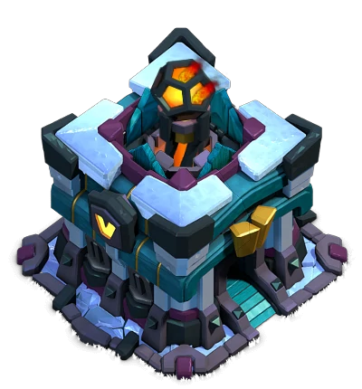

Simplify Townhall 13 attack

In townhall 13 Scatter shot can be very hectic, we can deal with it by either distracting with tanks like golem or spell like skeleton or make the heroes or troops invisible. Suprisingly, Super bowlers and Dragons can be very strong as they have high HP and also can be assist by Royal Champion, one thing we should keep in mind while attacking a TH13 is not to use
Royal Champion at the first place because she can jump walls and will target only the defences first, the chances are that all the defences will target at her first. So, we recommend to deploy her from mid attack to help with cleaning the defences.
Bat spells need to be very careful with the arrival of Scatter shot as they target multiple targets at once and have very high damage. Fortunately, with the new update Flame Flinger can be use to take out Scatters early in the game as make sure it stays out of X-Bow range.
We also recommend using 6 lighting and 1 earthquake to take down SCatter, Inferno and X-Bow which are conjusted as a particular area.
- Bowiwi : This strategy works great against single infernos and non conjusted walls, funnel the sides and deploy the remaining troops no big deal
12 Bowlers, 2-3 Super Wallbreakers, 11-12 Witch and Ice golems / Giants / Golems, 1 Heal, 2 Rage, 1, Jump, 3 freeze, Wall wrecker or Log Launcher, CC : freeze+Poison and Yetis
- Drag Smash : 12 Dragons, 3 Baby drag, 11 Ballons, 4 Rage, 3 Freeze, CC : Ballons ,Freeze + Poison
- Blizzard Lava Loon : This strategy works with almost every base but multiple infernos can be a cause some issues since
the ballons have low HP, make sure you freeze up the infernos and use haze spells to speed up your ballons
- Mass Witch : This strategy is too powerful especially at townhall 12, but it works smoothly against single infernos. if there
are 3 multiple infernos it is not avisable to use this strategy.
- Super witch : This strategy is quite strong against multiple infernos, just make sure you deploy your troops at right
timing because it can time failed you as Super witch approach things very slowly.
- Hog-Miner Hybrid : This is one of the most underrated strategies in Clash of Clans, we can use Blimp, Flame Flinger and Siege barrack
to assist us for a perfect Hybrid attack
- Super Bowler : First we need to funnel one side with flame flinger then other side with grand warden and then deploy the super bowlers
to ripped apart the main defences
Recommend Attacking Strategies
| Multiple |
Single |
Drag Smash |
Bowiwi |
| Super Witch |
Baby Drag |
| Super bowlers |
Hog-Miner Hybrid
|
| Electro Drag |
Sui Lalo or QC Lalo |